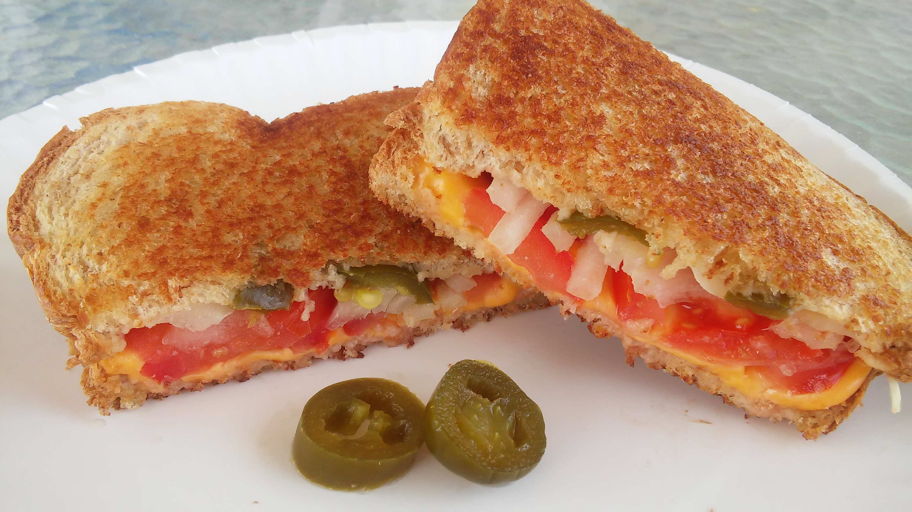

Grilled Cheese

Here is a recipe for Spicy Grilled Cheese
Ingredients
- 2 tablespoons butter or margarine
- 4 slices white bread
- 2 slices American cheese
- 1 roma (plum) tomato, thinly sliced
- 0.25 small onion, chopped
- 1 jalapeno pepper, chopped
Steps
- Heat a large skillet over low heat. Spread butter or margarine onto one side of two slices of bread. Place both pieces buttered side down in the skillet. Lay a slice of cheese on each one, and top with slices of tomato, onion and jalapeno. Butter one side of the remaining slices of bread, and place on top buttered side up. When the bottom of the sandwiches are toasted, flip and fry until brown on the other side.